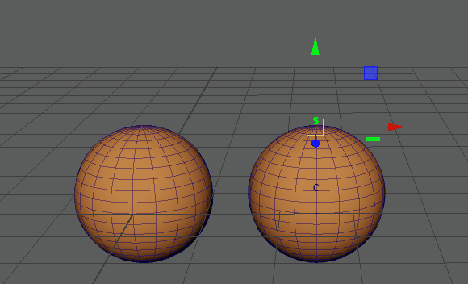
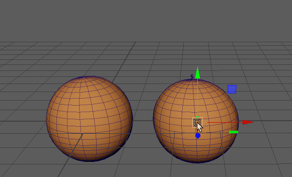
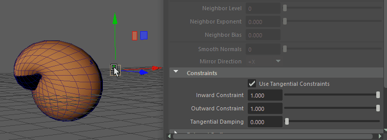

变形切向约束：软修改和簇变形器使源对象变形
可以使用变形变形器创建平滑的滑动效果。
- 按住 Shift 键并选择要变形的对象，然后选择源对象。

- 在“变形”(Deform)菜单中，选择 >
 。此时将显示变形选项(Morph options)窗口。（“变形”(Deform)菜单显示在“建模”(Modeling)(F2)、“绑定”(Rigging)(F3) 或“动画”(Animation)(F4) 菜单集中。）
注： 变形选项(Morph options)窗口包含用于在目标对象上创建源对象的变形的基本控件。源对象“属性编辑器”(Attribute Editor)的“变形”(Morph)选项卡中提供了变形变形器的详细内容。（变形选项(Morph options)主题中也介绍了这些设置。）
。此时将显示变形选项(Morph options)窗口。（“变形”(Deform)菜单显示在“建模”(Modeling)(F2)、“绑定”(Rigging)(F3) 或“动画”(Animation)(F4) 菜单集中。）
注： 变形选项(Morph options)窗口包含用于在目标对象上创建源对象的变形的基本控件。源对象“属性编辑器”(Attribute Editor)的“变形”(Morph)选项卡中提供了变形变形器的详细内容。（变形选项(Morph options)主题中也介绍了这些设置。） - 将设置保留为默认值（“绝对”(Absolute)、“对象空间”(Object Space)），然后单击“应用”(Apply)。
- 现在，转到属性编辑器(Attribute Editor) 变形(Morph)选项卡，其中还有其他变形选项(Morph options)。
- 激活“使用切向约束”(Use Tangential Constraints)选项。没有立竿见影的效果。
- 将“向内约束”(Inward Constraint)和“向外约束”(Outward Constraint)都设置为 1.00，以获得完整效果。
注： “向内约束”(Inward Constraint)和“向外约束”(Outward Constraint)值应相同，否则效果会不太平滑并出现参差不齐的边。
提示： 如果“向内”(Inward)和“向外”(Outward)约束产生了撕裂或锐边，请使用变形选项(Morph options)中的“切向阻尼”(Tangential Damping)设置来软化效果。
